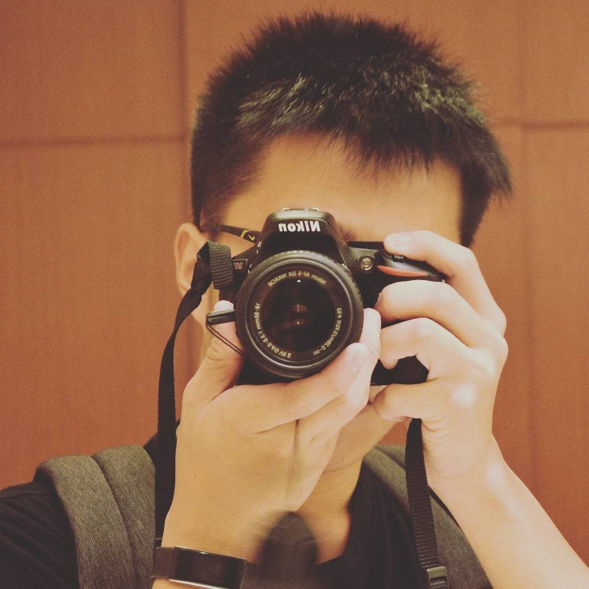

|  | About me
Hi!, I'm Kai. I am year 2 student in Singapore Polytechnic(SP) |
|---|
Hobbies & Interest
I always believed that if I dislike all the options given to me, I should give myself a new option by "making" it.
Hobbies includes:
|
Dislikes includes:
|
|---|